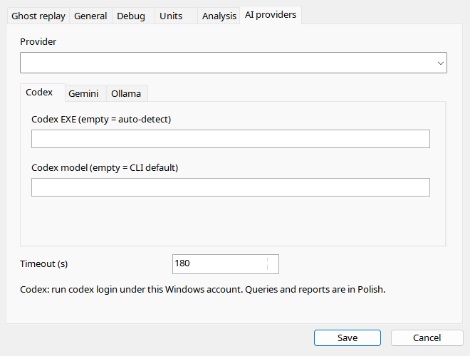
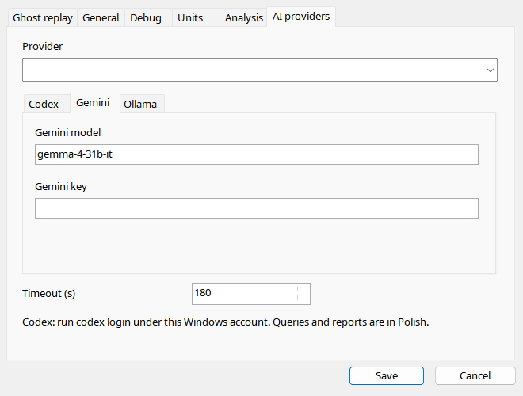
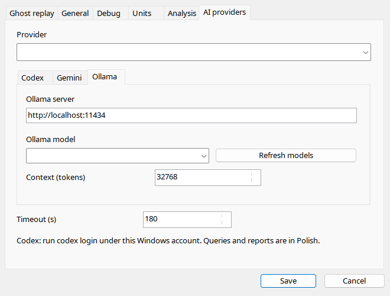

Choose the provider, then configure its tab. Codex needs an installed native CLI and separate authentication; the EXE field is not a wrapper-script field. Gemini requires a valid key/model. Ollama needs a reachable server with the model already installed; refreshing the list does not download weights. Timeout limits application waiting, not necessarily server-side processing. Never share personal settings.ini containing keys.
| Option / action | Behavior and limitations |
|---|---|
| Provider | Codex, Gemini or Ollama. Editing one provider does not create another provider's login. |
| Timeout | 1–1800 seconds, default 180. Stops waiting; it does not prove a cloud service never received the request. |
| Codex EXE | Blank auto-discovers native codex.exe. A .cmd/.ps1 wrapper is unsupported here. Authenticate separately using the CLI. |
| Codex model | Blank uses the CLI default; an override must be available to your account/CLI. |
| Gemini | Enter model identifier and API key. Never share personal settings.ini with its key in a bug report. |
| Ollama server | Default http://localhost:11434; use a reachable server URL, not a model-download webpage. |
| Model / Refresh | Lists installed server models. Refresh does not download weights; choose an installed model. |
| Ollama context | 2048–262144 tokens, default 32768; actual capacity depends on model/configuration/memory. |
| Language | Every provider receives the current application locale in the prompt; cockpit identifiers are preserved. |


